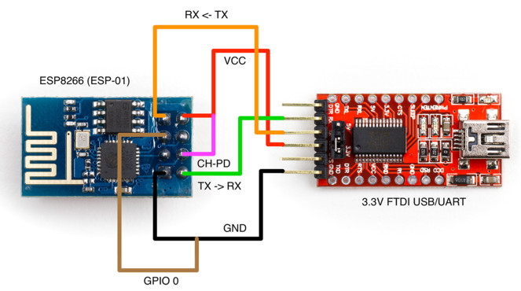
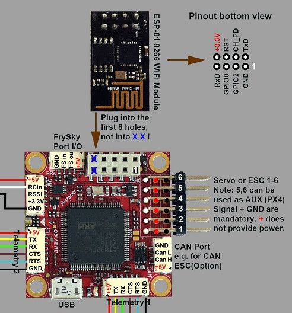
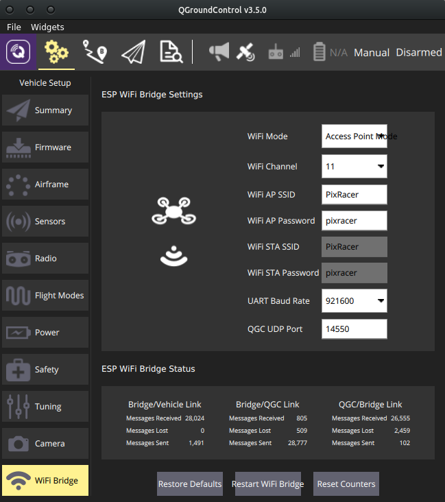
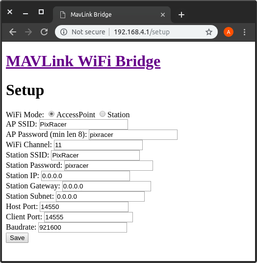

Модуль ESP8266
Более подробную информацию можно найти в основной статье в официальной документации и в репозитории с прошивкой для ESP8266.

Полётные контроллеры семейства Pixracer поддерживают подключение Wi-Fi модулей ESP8266. Эти модули можно использовать для подключения к полётному контроллеру с компьютера или планшета, даже если бортовой компьютер (например, Raspberry Pi) отсутствует или неисправен.
Для Клевера предпочтительнее связываться с полётным контроллером через Raspberry Pi.
Подготовка модуля
Перед началом работы в модуль ESP8266 следует загрузить прошивку с поддержкой MAVLink. Для этого потребуется:
- сама прошивка;
- компьютер с ОС на базе GNU/Linux;
- USB-UART адаптер;
- утилита esptool.
Убедитесь в том, что на вашем USB-UART адаптере установлено напряжение 3.3 В!
Подключите ваш модуль к USB-UART, как показано на схеме:

Скачайте прошивку для модуля. Подключите USB-UART к компьютеру и посмотрите, какое устройство соответствует переходнику. Убедитесь, что у вас установлена утилита esptool (её можно поставить командой pip install esptool). Запустите процесс загрузки прошивки командой:
esptool.py --baud 921600 --port /dev/ttyUSB0 write_flash 0x00000 firmware-1.2.2.bin
Вместо /dev/ttyUSB0 укажите устройство, соответствующее вашему переходнику, а вместо firmware-1.2.2.bin - путь к прошивке.
Если в процессе загрузки прошивки возникли проблемы, вы можете запустить процесс заново.
Работа с ESP8266

Подключите ESP8266 к Pixracer так, как показано на схеме, и включите полётный контроллер. В списке доступных Wi-Fi сетей появится сеть PixRacer с паролем по умолчанию pixracer. Подключитесь к этой сети и запустите QGroundControl. Программа должна автоматически установить соединение с полётным контроллером.
Если автоматическое подключение не происходит, проверьте, что в настройках QGroundControl включено автоматическое подключение по UDP.

В меню настроек полётного контроллера появится вкладка WiFi Bridge. В ней можно изменить некоторые параметры модуля, например, режим работы (точка доступа/клиент), название и пароль Wi-Fi сети.

Настоятельно рекомендуется поменять стандартные параметры сети!
Также эти параметры можно поменять в веб-интерфейсе модуля, доступном по умолчанию по адресу http://192.168.4.1/setup.
